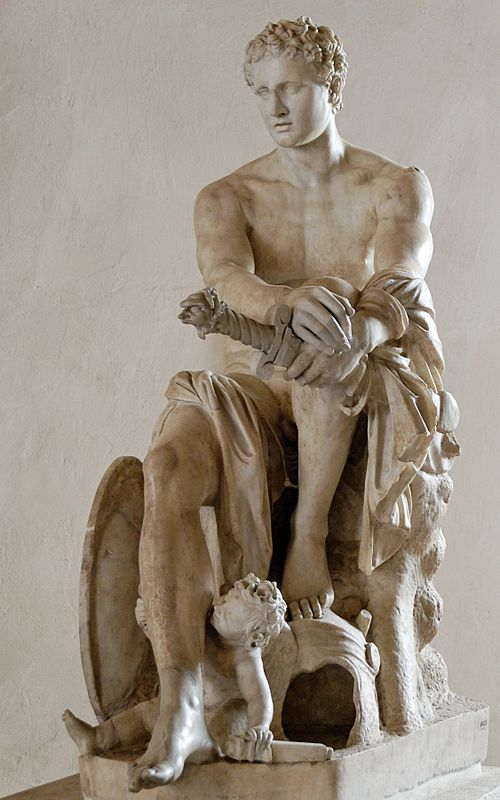
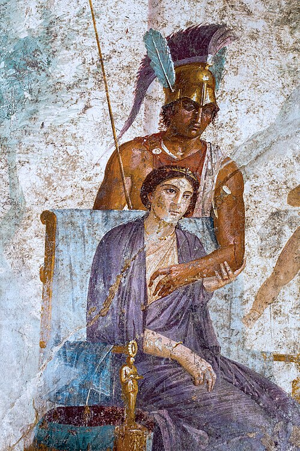

Аре́с или Аре́й (др.-греч. Ἄρης) — в древнегреческой мифологии[7] — бог войны. Входит в состав двенадцати олимпийских богов, сын Зевса и Геры. В отличие от Афины Паллады — богини честной и справедливой войны, — Арес, отличаясь вероломством и хитростью, предпочитал войну коварную и кровавую, войну ради самой войны. В произведениях Гомера можно встретить отождествление Ареса с войной и смертоносным оружием. Спутники Ареса — сестра, богиня раздора Эрида, дети Фобос (страх) и Деймос (ужас), кровожадная Энио. Его кони, дети одной из эриний и Борея, носили имена: Пламя, Шум, Ужас, Блеск. Атрибутами бога считались собаки, коршун, горящий факел и копьё. Изображался Арес обычно в виде могучего и зрелого воина в доспехах с мечом в руке и шлемом на голове. В римской мифологии ему соответствует Марс.

Арес Людовизи — предполагаемая римская копия с оригинала Скопаса.
Первоначально считалось, что Гера родила Ареса от прикосновения к волшебному цветку. В более поздних мифах Арес выступал как сын Зевса, который называл его самым ненавистным из всех богов и утверждал, что не будь Арес его родным сыном, он бы давно отправил его в Тартар, туда, где томятся потомки небесного бога Урана. В античной литературе можно встретить упоминания о том, что Арес был любовником самой красивой из богинь — Афродиты, иногда даже называются дети, которые были рождены от этого союза: Эрот, Антерос, Гармония, Гимерос, Фобос (страх) и Деймос (ужас). Из-за своих отрицательных качеств Арес с большим трудом утвердился среди остальных олимпийских богов, поэтому в его образе явственно прослеживаются следы напластования различных эпох. Некогда в течение 13 месяцев (лунного года) заточён в медной амфоре, либо в глиняном чане. Его пленили на время Алоады. Сам Арес освободил захваченного в плен Сизифом бога смерти Танатоса. Арес был возлюбленным богини Афродиты. Об их любви и нарушении Афродитой супружеской верности, очень часто упоминается в античной мифологии. В битве за Пилос был ранен Гераклом. Также Геракл ранил его, когда убил Кикна. Арес участвовал в Троянской войне на стороне троянцев и был побеждён Афиной. Сын финикийского царя Агенора Кадм, основавший Фивы в Беотии, убил посвящённого Аресу дракона.

Арес (Марс) и Афродита (Венера), сидящая на троне. Античная фреска из Помпей.